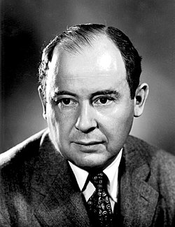

| Arcképe |  |
| Születési hely | Budapest |
| Születési dátum | 1903. december 28. |
| Házastársa | Kövesi Marietta (1929-1937) Dán Klára (1938-haláláig) |
| Gyermeke | Marina von Neumann Whitman |
| Munkahelyek | Princetoni Egyetem professzor (1930–1931) Institute for Advanced Studies professzor (1933–1955) |
| Halála | 1957. február 8. |
Neumann János matematikus, fizikus 1903-ban született és mindössze 1957-ig élt. Apja bankár volt, aki családjának jómódú életet biztosított. 1921-ben, a fasori fõgimnáziumban érettségizett, majd beiratkozott a budapesti tudományegyetem bölcsészkarára. Fõ tantárgya a matematika volt, melléktantárgyai a fizika és a kémia. 1925-ben végzett. Az itt folytatott tanulmányai során nagy hatással volt rá Fehér Lipót, aki az akkori magyar matematikai élet központi alakja volt, 1926-ban nála is doktorált.
A magyarországi egyetemmel egyidõben a berlini egyetem filozófia fakultásán is matematikát, fizikát és kémiát hallgatott (1921-1923).
1924-tõl a zürichi Eidgenössische Technische Hochschule-n folytatta tanulmányait. 1926 októberében szerezte meg a vegyészmérnöki diplomáját.
A három egyetemen szerzett tudással ösztöndíjasként a német matematika fellegvárába Göttingenbe ment és David Hilberttel dolgozott együtt. E munka egyik gyümölcse lett az L. Nordheimmel hármasban írt és 1927-ben megjelent dolgozata 'A kvantummechanika matematikai megalapozása' címmel. Ugyancsak itt tartotta meg elõadását 1926-ban 'A társasjátékok elméletérõl' címmel, amivel egy új tudomány alapjait vetette meg.
1927-ben visszatért Berlinbe, ahol kérvényt nyújtott be "Venia Legendi", tanítási engedély megszerzésére a Friedrich Wilhelm (ma Humboldt) Egyetemen, Berlini habilitációs írásának ugyanazt választotta, ami budapesti doktori disszertációja volt: 'A halmazelmélet axiomatikus felépítése' címmel. Mises, Planck, Laue, Nernst és mások egybehangzóan elfogadták jelentkezését. 1929-ben meghívta a Princeton University vendégprofesszornak. 1930-tól 1933-ig fél évet Amerikában, felet Európában tanított. Részben a fasizmus gyõzelme Berlinben, részben az Institute for Advanced Study megalapítása Princetonban, vezette arra az elhatározására, hogy letelepedjen az Egyesült Államokban. Einstein, J. W. Alexander és O. Veblen után Neumann lett a negyedik kinevezett állandó professzor. 1937-ben kapta meg az amerikai állampolgárságot.
Részt vett az atomenergia felszabadításában és háborús célú felhasználásában - majd a békés energiatermelés szolgálatába állításának irányításában is. 1954-ben Eisenhower kinevezte az Atomenergia Bizottság tagjává, amelyet késõbb a szenátus is megerõsített. 1957-ben bekövetkezett haláláig töltötte be ezt a posztot. Egyidejûleg 1945-tõl 1957-ig a princetoni Elektronikus Számítógép Projekt igazgatójának tisztjét is betöltötte.
Fõbb tudományos tevékenysége: lefektette a programvezérlésû automaták elméleti alapjait, amelyekre a jelen digitális számítógépei is épülnek; a játékelmélet megalapítója, a halmazelmélet egzakt megalapozója. A kvantumfizikai mennyiségek mérésének elméletét matematikai alapokra helyezte.
További információk elérhetõk itt!